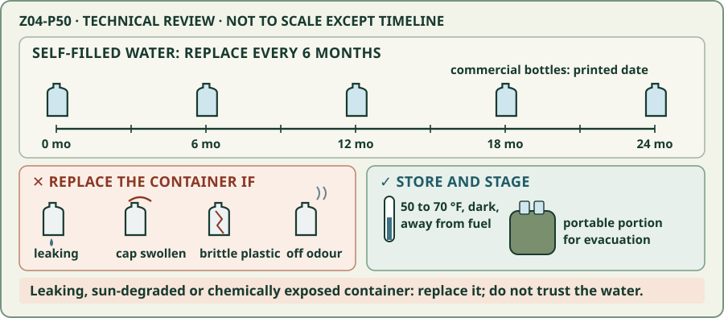

Z04-P50 · Water · New manuscript
Rotate household water reserves and inspect seals and storage heat
Maintain stored household potable water so containers stay intact, cool and ready when municipal service fails.
When it applies · Home, cabin and vehicle emergency water reserves prepared ahead of outages, storms or advisories.
Equipment · Commercially bottled water or sanitized food-grade jugs, permanent marker, cool dark storage space and calendar reminder.

Actions
- Label self-filled potable containers with fill date and rotate stored tap water every 6 months; follow printed expiration dates on sealed commercial water.[W14, W06]
- Store water in a cool, dark location off bare concrete if recommended and well away from gasoline, pesticides, paint thinners or cleaning chemicals whose vapors can permeate plastics.[W06, W01]
- Inspect stored jugs periodically for leaks, swollen caps, brittle plastic or off-odors, and keep a portable portion ready for rapid evacuation.[W06, W14, T13]
Failure recognition · Stacking emergency water jugs next to lawnmower gas cans in a hot garage for years without checking seals or rotating water.[W01, W06, W14]
Verify · Confirm fill/expiration dates are current, seals are tight, storage stays cool and chemical-free, and at least 1 gallon per person per day for 3+ days is accessible.[W14, W06, ED]
Stop or change course · Replace any leaking, sun-degraded or chemically exposed container immediately rather than trusting its contents during an emergency.[W01, W06]
Evidence and editorial notes
- T13 · FEMA / Ready.gov · Evacuation (current web edition)
- Section: Evacuation > Before, During, and After Evacuation · Conditions: Developing wildfire, flood, storm, or infrastructure emergency
Support: Identify multiple exit routes ahead of time, keep essential go-bags and fuel ready, leave promptly when authorities order evacuation, and do not return until officials declare the area safe.
Limitations: Late departure can trap groups behind road closures, smoke, or rising water. · Conflicting evidence: None; pairs with NWS-FLOOD and READY-WILDFIRE.
Editorial note: Establishes clear leave-early decision thresholds for multi-hazard scenarios. · Specialist reviewer: Emergency management
Primary source · checked 2026-11-24 - W01 · CDC · How to Make Water Safe in an Emergency (2024-09-19)
- Section: Water with fuel or toxic chemicals in it · Conditions: Suspected fuel, toxic chemicals or radioactive contamination
Support: Use a different safe supply. Standard boiling and microbial disinfection do not make this water safe.
Limitations: Does not list contaminant-specific lab remediation; applies to emergency consumer decisions only. · Conflicting evidence: None across CDC/EPA emergency guidance.
Editorial note: Used as upstream hard-stop gate prior to any field treatment card. · Specialist reviewer: Drinking-water safety and public health
Primary source · checked 2026-11-24 - W06 · CDC · How to Create an Emergency Water Supply (current web edition)
- Section: How to store emergency water; Safe storage containers · Conditions: Potable water intended for emergency storage
Support: Prefer sealed commercial water or clean food-grade tight-closing containers. Avoid containers that held toxic chemicals.
Limitations: Container shelf durability and rotation depend on plastic/material type and storage heat. · Conflicting evidence: None; reinforces strict raw-vs-clean segregation.
Editorial note: Used to enforce labeling and dedicated raw/potable vessel separation. · Specialist reviewer: Drinking-water safety and public health
Primary source · checked 2026-11-24 - W14 · CDC · How to Create an Emergency Water Supply (current web edition)
- Section: How Much Water to Store; Rotation · Conditions: Household emergency water reserve planning
Support: Plan at least 1 gallon per person per day for at least 3 days (more for heat, illness, pregnancy, or pets); rotate self-filled water every 6 months.
Limitations: Backcountry active travel demands vary sharply by exertion, temperature, and humidity. · Conflicting evidence: None; household baseline is cited only as a planning floor, not a physiological maximum.
Editorial note: Distinguishes household storage floors from active field hydration demands. · Specialist reviewer: Household preparedness and drinking-water safety
Primary source · checked 2026-11-24
Source lineage · CDC emergency water supply; new manuscript · Classification · New manuscript.